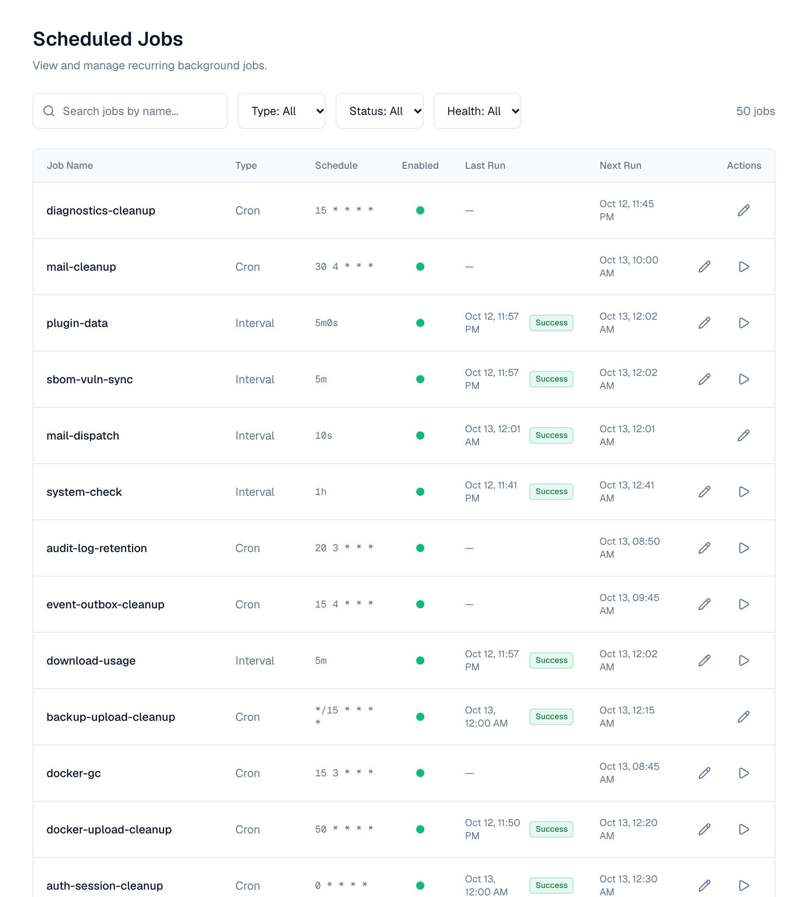

1. Overview
The application includes a built-in job scheduler that automatically runs recurring maintenance tasks and background operations. As an administrator, you can view, configure, and manually trigger these jobs through the Scheduler management UI.
2. Accessing the Scheduler
Go to Settings → Advanced → Scheduled Jobs to see every registered job and its current status.
Required permission: scheduler:read to view jobs, scheduler:write to modify them.
3. Understanding the Job List
The scheduler dashboard shows all registered jobs with the following information:
| Column | Description |
|---|---|
| Name | Unique identifier for the job |
| Status | Enabled or Disabled — whether the job is actively running on schedule |
| Schedule | Cron expression showing when the job runs (e.g., "Every hour", "Daily at 3:30 AM") |
| Last Run | When the job last executed and whether it succeeded or failed |
| Next Run | When the job is scheduled to run next |
| Health | Green (healthy), Yellow (recent failure), Red (multiple consecutive failures) |

4. Job Statuses
Each job run is recorded with one of these statuses:
| Status | Meaning |
|---|---|
| ✅ Success | The job completed without errors |
| ❌ Failure | The job encountered an error (see run history for details) |
| ⏱️ Timeout | The job exceeded its maximum allowed duration and was cancelled |
| ⏭️ Skipped | The job was skipped (e.g., blocked by a plugin hook or already running) |
5. Configuring Jobs
Changing the Schedule
If a job has the "Schedule Editable" flag (shown as a pencil icon next to the schedule), you can change when it runs:
- Click the pencil icon on the job's row
- Enter a new cron expression (in UTC) or interval
- Check Next run, shown in your own time zone under the field
- Click Save Changes
Cron schedules are in UTC on every server, and the Schedule column marks them UTC. Last and next run times are shown in your own time zone, so 0 8 * * * reads 13:30 for someone in India.

The new schedule takes effect immediately — no restart required.
Cron expression format: minute hour day-of-month month day-of-week
| Expression | Meaning |
|---|---|
| 0 * * * * | Every hour at minute 0 |
| 30 3 * * * | Daily at 3:30 AM |
| 0 0 * * 0 | Weekly on Sunday at midnight |
| 0 */6 * * * | Every 6 hours |
| 0 9 * * 1-5 | Weekdays at 9:00 AM |
Changing Job Parameters (Metadata)
Some jobs have configurable parameters (e.g., retention days, batch size). If a job has the "Metadata Editable" flag:
- Click the job name to open its detail view
- Click Edit Parameters
- Modify the values (each parameter has a description and valid range)
- Click Save
Changes take effect on the next scheduled run.
Enabling / Disabling Jobs
If a job has the "Toggleable" flag:
- Click the toggle switch next to the job name
- Confirm the action
Disabled jobs will not run on their schedule but remain registered. Re-enabling them resumes normal scheduling.
Some system-critical jobs (like session cleanup) cannot be disabled — they are marked as non-toggleable.
6. Manual Execution
If a job has the "Manual Run" flag (shown as a play button ▶️):
- Click the Run Now button next to the job
- The job will execute immediately using its current configuration
- Manual runs use the same parameters (metadata) as scheduled runs
- If the job is already running (on another node), the manual run will be rejected with a "conflict" message
- Manual runs are recorded in run history just like scheduled runs
7. Viewing Run History
Each job maintains a detailed execution history:
- Click the job name to open its detail view
- Select the Run History tab
Each run record shows:
- Started At — When the execution began
- Duration — How long it took
- Status — Success, Failure, Timeout, or Skipped
- Node — Which server node executed the job (in multi-node deployments)
- Attempt — Retry attempt number (if retries are configured)
- Error — Error message (for failed runs)
- Parameters — Snapshot of the metadata used for that specific run
Run history is automatically cleaned up after the configured retention period (default: 30 days, minimum 50 runs per job are always kept).
Jobs that run every few seconds or every minute (for example mail-dispatch, event-dispatch and directory-sync) keep only failed and timed-out runs in their history, and the history panel says so. Their successful runs still update Last run in the list.
A job can ship switched off (the scheduled backup does): it stays listed and runs once you switch it on. Switching a job on or off, or changing its schedule, reaches every server of a cluster within one tick of the job.
8. Built-in Jobs
The application ships with these pre-configured jobs:
Session Cleanup (auth-session-cleanup)
| Setting | Value |
|---|---|
| Schedule | Every hour (0 * * * *) |
| Purpose | Removes sign-in sessions that were revoked, or could no longer be renewed, more than retention_days ago. A “Remember me” session is kept while it can still be renewed (30 days) |
| Parameter | retention_days — how many days after a session ends to keep it (default: 7) |
| Toggleable | No (always runs) |
| Schedule Editable | Yes |
| Manual Run | Yes |
Scheduled Backup (backup-scheduled)
| Setting | Value |
|---|---|
| Schedule | Daily at 2:00 AM (0 2 * * *, or BACKUP_SCHEDULE) |
| Purpose | Takes a backup of the database and platform files and checks it. See Backups |
| Default | Off: switch it on to start taking backups |
| Missed runs | Runs once when a server starts after a missed time |
| Toggleable | Yes |
| Schedule Editable | Yes |
| Manual Run | Yes |
Backup Cleanup (backup-cleanup)
| Setting | Value |
|---|---|
| Schedule | Daily at 3:00 AM (0 3 * * *, or BACKUP_CLEANUP_SCHEDULE) |
| Purpose | Deletes backups older than retention_days, never one kept permanently nor the newest verified backup; also marks backups whose server stopped reporting as failed |
| Parameter | retention_days — days to keep a backup (default: 7, or BACKUP_RETENTION_DAYS) |
| Toggleable | Yes |
| Schedule Editable | Yes |
| Manual Run | Yes |
API Token Cleanup (apitoken-cleanup)
| Setting | Value |
|---|---|
| Schedule | Daily at 3:30 AM (30 3 * * *) |
| Purpose | Removes API tokens that expired or were revoked more than retention_days ago, so they stay listed (as Expired or Revoked) for a while first |
| Parameter | retention_days — how many days after a token expires or is revoked to keep it (default: 90, or API_TOKEN_RETENTION_DAYS) |
| Toggleable | No (always runs) |
| Schedule Editable | Yes |
| Manual Run | Yes |
Download Usage (download-usage)
| Setting | Value |
|---|---|
| Schedule | Every 5 minutes (5m) |
| Purpose | Copies the day's download totals per person, token, AI app, organization and repository to the database for the download report, restores Redis's totals after it restarted or failed over, and deletes totals older than retention_days. Addresses are never stored |
| Parameter | retention_days — days of totals to keep (default: 90, or DOWNLOAD_USAGE_RETENTION_DAYS) |
| Run history | Only failed runs are recorded |
| Toggleable | No (always runs) |
| Schedule Editable | Yes |
| Manual Run | Yes |
Token Usage (token-usage-flush)
| Setting | Value |
|---|---|
| Schedule | Every minute, on every server |
| Purpose | Each server counts API token requests and saves each token's request count and last-used time every few seconds (API_TOKEN_USAGE_FLUSH_INTERVAL, 5s); this job saves what a server that went quiet still holds |
| Run history | Only failed runs are recorded |
| Toggleable | No |
| Schedule Editable | No |
| Manual Run | No |
Run History Cleanup (scheduler-run-history-cleanup)
| Setting | Value |
|---|---|
| Schedule | Daily at 3:00 AM (0 3 * * *) |
| Purpose | Cleans up old job execution records to prevent unbounded database growth |
| Parameters | retention_days (default: 30), min_runs_per_job (default: 50) |
| Toggleable | Yes |
| Schedule Editable | Yes |
| Manual Run | Yes |
Event Delivery (event-dispatch)
| Setting | Value |
|---|---|
| Schedule | Every few seconds (EVENT_DISPATCH_INTERVAL, default 5s) |
| Purpose | Delivers events to alert rules, plugins and automation, retrying failures |
| Run history | Only failed runs are recorded, so the history stays readable |
| Toggleable | No (always runs) |
| Schedule Editable | No |
| Manual Run | No |
Search Change Cleanup (index-events-prune)
| Setting | Value |
|---|---|
| Schedule | Hourly at :25 UTC (25 * * * *, INDEX_EVENTS_PRUNE_SCHEDULE) |
| Purpose | Deletes search index changes older than a day, after every server has applied them; a server that was down longer than that rebuilds its search index when it starts |
| Toggleable | No |
| Schedule Editable | Yes |
| Manual Run | Yes |
Event Cleanup (event-outbox-cleanup)
| Setting | Value |
|---|---|
| Schedule | Daily at 4:15 AM (15 4 * * *, EVENT_OUTBOX_CLEANUP_SCHEDULE) |
| Purpose | Removes delivered events after EVENT_OUTBOX_RETENTION_DAYS (7) and failed ones after EVENT_DEAD_RETENTION_DAYS (30) |
| Toggleable | No (always runs) |
| Schedule Editable | Yes |
| Manual Run | Yes |
Policy Compliance Check (policy-compliance-scan)
| Setting | Value |
|---|---|
| Schedule | Daily at 03:30 UTC (POLICY_SCAN_SCHEDULE) |
| Purpose | Checks existing API tokens and repositories against each block and warn policy and lists what they would affect (read-only) |
| Toggleable | Yes |
| Schedule Editable | Yes |
| Manual Run | Yes |
Automation Run Cleanup (automation-run-cleanup)
| Setting | Value |
|---|---|
| Schedule | Daily at 04:50 UTC (AUTOMATION_RUN_CLEANUP_SCHEDULE) |
| Purpose | Removes automation runs older than AUTOMATION_RUN_RETENTION_DAYS (30) |
| Toggleable | No |
| Schedule Editable | Yes |
| Manual Run | Yes |
Directory Sync (directory-sync)
| Setting | Value |
|---|---|
| Schedule | Every minute (DIRECTORY_SYNC_CHECK_INTERVAL) |
| Purpose | Syncs each LDAP and Active Directory directory that is due, at that directory's own interval (see Users & Directories) |
| Toggleable | Yes (turning it off stops all directory syncs) |
| Schedule Editable | No |
| Manual Run | No (use Sync now on the directory) |
Directory Sync History Cleanup (directory-sync-run-cleanup)
| Setting | Value |
|---|---|
| Schedule | Daily at 04:40 UTC (DIRECTORY_SYNC_RUN_CLEANUP_SCHEDULE) |
| Purpose | Removes directory sync runs finished more than 90 days ago |
| Toggleable | No |
| Schedule Editable | Yes |
| Manual Run | Yes |
Email Delivery (mail-dispatch)
| Setting | Value |
|---|---|
| Schedule | Every 10 seconds (MAIL_DISPATCH_INTERVAL) |
| Purpose | Sends queued email and retries failed deliveries (see Email) |
| Toggleable | No |
| Schedule Editable | No |
| Manual Run | No |
Email History Cleanup (mail-cleanup)
| Setting | Value |
|---|---|
| Schedule | Daily at 04:30 UTC (MAIL_CLEANUP_SCHEDULE) |
| Purpose | Removes records of sent and failed email older than 30 days |
| Toggleable | No |
| Schedule Editable | Yes |
| Manual Run | Yes |
Deleted Repositories (repository-purge)
| Setting | Value |
|---|---|
| Schedule | Daily at 04:30, once per cluster |
| Purpose | Removes deleted repositories for good once they have been kept retention_days (7), and at once those a super admin deleted permanently (which starts a run straight away). What a repository held goes in batches of batch_size versions (1000), then the repository itself. Until then a deleted repository can be restored (Settings → Deleted repositories). A run stops after 2 hours and the next one carries on |
| Toggleable | No |
| Schedule Editable | Yes |
| Metadata Editable | Yes (retention_days, batch_size) |
| Manual Run | Yes |
Unused Artifact Content (artifact-blob-gc)
| Setting | Value |
|---|---|
| Schedule | Hourly at :20 |
| Purpose | Each distinct file content is stored once, however many repositories hold it. Deletes content no file uses any more (after deletes, overwrites and emptied trash) once unused for ARTIFACT_BLOB_GC_GRACE (1 hour) |
| Toggleable | No |
| Schedule Editable | Yes |
| Manual Run | Yes |
Download Counts (artifact-download-flush)
| Setting | Value |
|---|---|
| Schedule | Every minute, on every server |
| Purpose | Each server counts downloads and saves files' and versions' download counts and last-downloaded times every few seconds (ARTIFACT_DOWNLOAD_FLUSH_INTERVAL, 5s); this job saves what a server that went quiet still holds |
| Run history | Only failed runs are recorded |
| Toggleable | No |
| Schedule Editable | No |
| Manual Run | No |
Abandoned Uploads (artifact-upload-temp-cleanup)
| Setting | Value |
|---|---|
| Schedule | Hourly at :40 |
| Purpose | Removes temporary files of uploads interrupted by a server stopping, after ARTIFACT_UPLOAD_TEMP_TTL (24 hours) |
| Toggleable | No |
| Schedule Editable | Yes |
| Manual Run | Yes |
Unused Docker Layers (docker-gc)
| Setting | Value |
|---|---|
| Schedule | Daily at 03:15 |
| Purpose | Removes manifests and layers of hosted Docker repositories that no tag uses any more, once older than DOCKER_GC_GRACE (24 hours) |
| Toggleable | Yes |
| Schedule Editable | Yes |
| Manual Run | Yes |
Unfinished Docker Uploads (docker-upload-cleanup)
| Setting | Value |
|---|---|
| Schedule | Hourly at :50 |
| Purpose | Forgets layer uploads not finished within DOCKER_UPLOAD_TTL (24 hours) |
| Toggleable | No |
| Schedule Editable | Yes |
| Manual Run | Yes |
RubyGems Index Warm-up (rubygems-index-warm)
| Setting | Value |
|---|---|
| Schedule | Every minute (1m), once per cluster |
| Purpose | Makes the first copy of the upstream's list of gems (versions) for each new RubyGems proxy, then the list of each new or changed RubyGems group, so the first bundle install through them isn't asked to try again (503). Proxies and groups whose list exists are left alone; a proxy whose upstream can't be asked now is skipped, and its first client makes the copy |
| Run history | Only failed runs are recorded |
| Toggleable | Yes (off: the first request to each new proxy or group makes its list) |
| Schedule Editable | Yes |
| Manual Run | Yes |
RubyGems Index Compaction (rubygems-index-compact)
| Setting | Value |
|---|---|
| Schedule | Daily at 03:40 (40 3 * * *), once per cluster |
| Purpose | Tidies the copies RubyGems proxies keep of their upstream's list of gems, and the lists RubyGems groups keep: gives a group's list a fresh start once what was added to it passes appended_ratio percent of it, or its last fresh start is older than max_age_days (each Bundler client then downloads it once in full), joins the small pieces each update adds into larger ones, forgets a group's list for a set of members nobody has read for 7 days, and deletes copies replaced or no longer used (their repository or upstream deleted or changed) once they are older than grace_minutes. Apart from those full downloads, clients notice nothing |
| Parameters | small_chunks — how many small pieces a copy may have before they are joined (default: 256); grace_minutes — how long a replaced copy is kept for downloads still reading it (default: 60; keep it at an hour or more); appended_ratio — how much a group's list may grow, in percent of its last fresh start, before it gets a new one (default: 25); max_age_days — how old a group's fresh start may get, once anything was added to it, before it gets a new one (default: 31) |
| Toggleable | Yes |
| Schedule Editable | Yes |
| Metadata Editable | Yes (small_chunks, grace_minutes, appended_ratio, max_age_days) |
| Manual Run | Yes |
Artifact Inspection (browse-inspect)
| Setting | Value |
|---|---|
| Schedule | Every 10 seconds |
| Purpose | Reads newly published or fetched versions for the browser: dependencies, SBOMs, signatures and attestations; quarantines versions carrying unsafe content (see Browse) |
| Toggleable | No |
| Schedule Editable | No |
| Manual Run | No |
Ended Quarantines (quarantine-expiry)
| Setting | Value |
|---|---|
| Schedule | Every 15 minutes |
| Purpose | Records quarantines set by age rules whose time is up as released (they stop applying at that moment anyway) and raises artifact.release |
| Toggleable | No |
| Schedule Editable | Yes |
| Manual Run | Yes |
9. Multi-Node Behavior
In clustered deployments (multiple application nodes), the scheduler ensures:
- Singleton jobs run on exactly one node per scheduled interval — no duplicate execution
- Any node can pick up a job — the first to acquire the distributed lock wins
- If a node crashes mid-job, the lock automatically expires and another node picks it up on the next scheduled run
- The Node column in run history shows which server executed each run
You do not need to configure anything for this. The lock is kept in PostgreSQL, so jobs keep running once per cluster while Redis is unavailable.
10. Health Monitoring
The scheduler tracks job health based on consecutive failures:
| Health State | Meaning |
|---|---|
| 🟢 Healthy | Job is running successfully |
| 🟡 Warning | Job failed once or twice recently |
| 🔴 Unhealthy | Job has failed 3+ times consecutively |
When a job becomes unhealthy:
- An alert event is fired (can be consumed by notification plugins)
- The job continues to run on schedule — it is NOT automatically disabled
- When the job succeeds again, it returns to healthy status and a recovery event is fired
11. Permissions
| Permission | Scope | What it allows |
|---|---|---|
| scheduler:read | View | See all jobs, their status, and run history |
| scheduler:write | Manage | Change schedules, toggle jobs, edit parameters, trigger manual runs |
12. Troubleshooting
"Job is currently executing, conflict"
This means the job is already running on another node. Wait for it to complete, or check the run history to see if it's stuck (exceeding its max duration).
Job shows as "Timeout"
The job exceeded its maximum allowed execution time and was cancelled. This could mean:
- The operation is taking longer than expected (e.g., large dataset to clean up)
- There's a performance issue with the underlying operation
- Contact your system administrator to investigate or increase the timeout
Job keeps failing (Unhealthy)
Check the run history for error messages. Common causes:
- Database connectivity issues
- Insufficient permissions for the cleanup operation
- Resource constraints (memory, disk space)
Schedule changes not taking effect
- Verify you have scheduler:write permission
- Check that the job has "Schedule Editable" enabled
- Ensure the cron expression is valid (the UI validates this before saving)
Job not running at expected time
- Check if the job is disabled (toggle switch)
- In multi-node deployments, the job runs on one node — check all nodes' logs
- The schedule uses UTC time — verify your timezone expectations
13. Environment Variables (Server Configuration)
These are configured by the system administrator at deployment time:
| Variable | Default | Description |
|---|---|---|
| SCHEDULER_RUN_HISTORY_RETENTION_DAYS | 30 | Default days to keep run history |
| API_TOKEN_USAGE_FLUSH_INTERVAL | 5s | How long a server keeps API token request counts and last-used times before saving them (up to 1m) |
| ARTIFACT_DOWNLOAD_FLUSH_INTERVAL | 5s | How long a server keeps download counts and last-downloaded times before saving them (up to 1m) |
| SCHEDULER_UNHEALTHY_THRESHOLD | 3 | Consecutive failures before marking unhealthy |
| SCHEDULER_SHUTDOWN_GRACE_PERIOD | 30s | Time to wait for running jobs during server restart |
| API_TOKEN_RETENTION_DAYS | 90 | Default retention for expired API tokens |
14. FAQ
Q: Can I add custom jobs? A: Custom jobs are added by developers through the codebase. The scheduler UI manages existing registered jobs. If you need a new recurring task, contact your development team.
Q: What happens during a server restart? A: Running jobs are given a grace period to complete (default: 30 seconds). If they don't finish in time, they are cancelled and recorded as "timeout". On the next startup, the scheduler detects any missed fire times and handles them according to each job's misfire policy.
Q: Can I see which node ran a job? A: Yes — the run history shows the Node ID for each execution. This is useful for debugging in multi-node deployments.
Q: What timezone do schedules use? A: All cron schedules use UTC, whatever time zone the servers or viewers are in. Last and next run times, and the next run shown while you edit a schedule, are in your own time zone.
Q: Will disabling a job cause data to accumulate? A: Yes — if you disable a cleanup job, the data it would normally clean up will continue to grow. Only disable jobs temporarily and re-enable them when the issue is resolved.